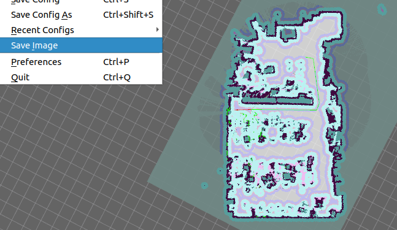
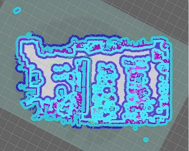
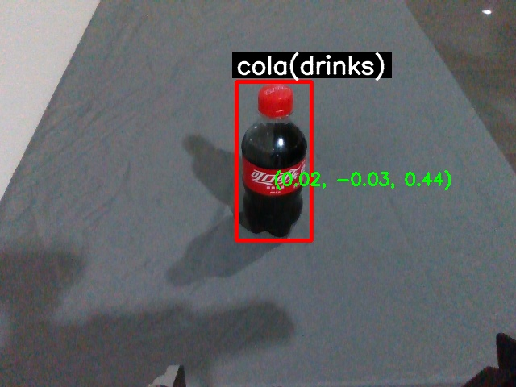
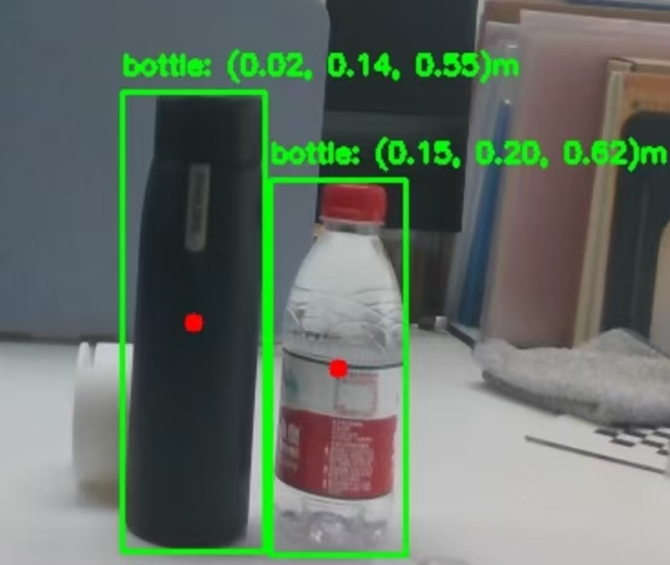
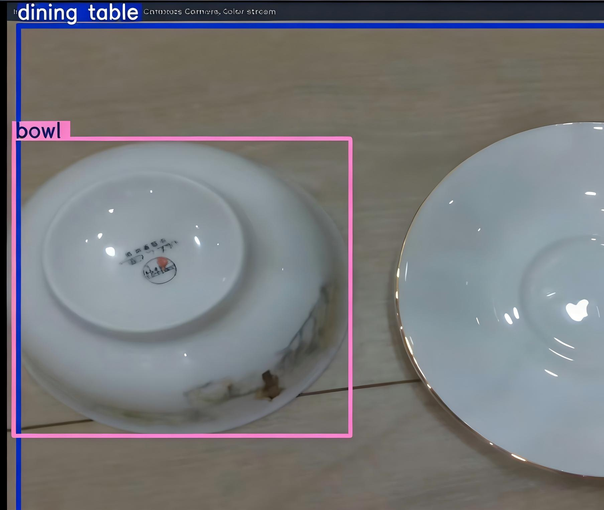

Introduction
The RoboCup@Home League
The RoboCup@Home league aims to develop service and assistive robot technology with high relevance for future personal domestic applications.
It is the largest international annual competition for autonomous service robots and is part of the RoboCup initiative.
A set of benchmark tests is used to evaluate the robots’ abilities and performance in a realistic non-standardized home environment setting.
Focus lies on the following domains but is not limited to: Human-Robot Interaction and Cooperation, Navigation and Mapping in dynamic environments,
Computer Vision and Object Recognition under natural light conditions, Object Manipulation, Adaptive Behaviors, Behavior Integration,
Ambient Intelligence, Standardization, and System Integration. It is colocated with the RoboCup symposium.
TJArk@Home
The Robotics and Artificial Intelligence Lab (RAIL) of Tongji University was founded in 1992.
Team TJArk of RAIL was founded in 2004 and participated in the RoboCup World Cup from 2006 to 2019.
We achieved seven consecutive championships in the China RoboCup SPL and once won third place in the RoboCup 2018 SPL.
In December 2018, we founded a new energetic team to participate in the RoboCup@Home League, called TJArk@Home.
The main goal of TJArk@Home is to explore how well robots can serve people in daily life at an acceptable cost.
Guided by this vision, we conduct extensive research on our robot platform, including:
- SLAM (Simultaneous Localization and Mapping)
- Autonomous navigation
- Object detection and recognition
- Human-face detection and analysis
- Human–robot interaction
- Motion control
- Trajectory teaching
In April 2019, TJArk@Home participated in the China RoboCup@Home League for the first time and earned first place in the SSPL (Social Standard Platform League).
During the competition, we demonstrated various abilities, including autonomous navigation, following an operator to a given position,
speech recognition and response, and human detection with feature summarization.
Visual Simultaneous Localization and Mapping
Our robot requires an environmental model (map) to support tasks such as autonomous navigation.
However, prior maps are often unavailable in dynamic home scenarios, making SLAM essential.
Stereo camera data is used by a visual SLAM module, assisted by limited laser data and odometry inputs.
Our VSLAM algorithm is based on RTAB-Map and modified for our robot’s sensors.
Odometry and laser data provide initial pose estimation, while stereo data performs appearance-based loop closure to optimize local and global poses.


The VSLAM system generates a 3D point cloud, which we project into a 2D grid map for navigation.
With the map and robot parameters, the DWA (Dynamic Window Approach) algorithm plans a safe path.
Vision, laser, and sonar data are fused for real-time obstacle avoidance in dynamic environments.
Motion commands are then sent through robot APIs to enable fully autonomous navigation.
Computer Vision
Various vision algorithms are applied to support perception of objects and humans.
Our robot can detect and recognize different people, remember names and features, and track them for interactive tasks.
For object-level reasoning, we designed a detection framework based on YOLO for real-time indoor object recognition across 50 categories.
Training data is collected from large public datasets, and adjacent frame matching is used to improve robustness.



As the robot’s built-in camera has a limited field of view, we expand visual perception by stitching images from multiple viewpoints,
followed by fusion algorithms to reduce lighting and geometric inconsistencies.
This enables more complete visual information for high-level processing.
For human pose estimation, we employ OpenPose to achieve robust, real-time multi-person body-part detection using a non-parametric representation.
Software Framework
We developed a Python-based framework that integrates ROS components.
Team members can easily add custom modules (e.g., motion, detection, navigation) to the framework.
During competitions, the robot can execute complex tasks using these modules.
The framework is still under development, so it is not open-sourced yet.
RoboCup Participation
Previous participation and rankings in RoboCup and local tournaments (China Region).
- 2019 RoboCup SSPL (China) – Champion
- 2020 RoboCup SSPL (China) – Champion
- 2021 RoboCup SSPL (China) – Champion
- 2021 RoboCup OPL (China) – Champion
- 2022 RoboCup SSPL (China) – First Prize
- 2025 RoboCup OPL (China) – Champion
Learn more about our lab and the competitions: